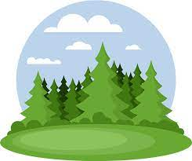
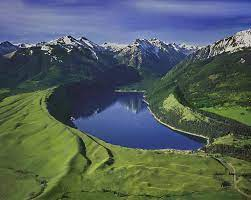
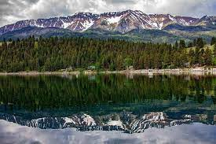
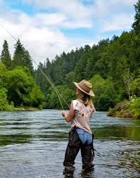
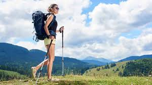
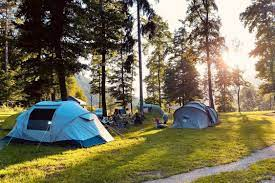

|  |
Welcome to Wallowa Lake |
|---|
History of Wallowa Lake
Wallowa Lake is a ribbon lake 1 mile (1.6 km) south of Joseph, Oregon, United States, at an elevation of 4,372 ft (1,333 m). Impounded by high moraines, it was formed by a series of Pleistocene glaciers. On the south end of the lake is a small community made up of vacation homes, lodging, restaurants, as well as other small businesses. Wallowa Lake has been used for recreation since at least 1880. The Wallowa Lake State Park is at the southern tip of the lake.
Photos of Wallowa Lake
|  |  |
|---|
There are many things to do at Wallowa Lake
|  |  |  |
|---|---|---|
| Fishing | Hiking | Camping |